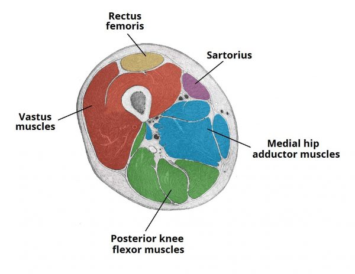
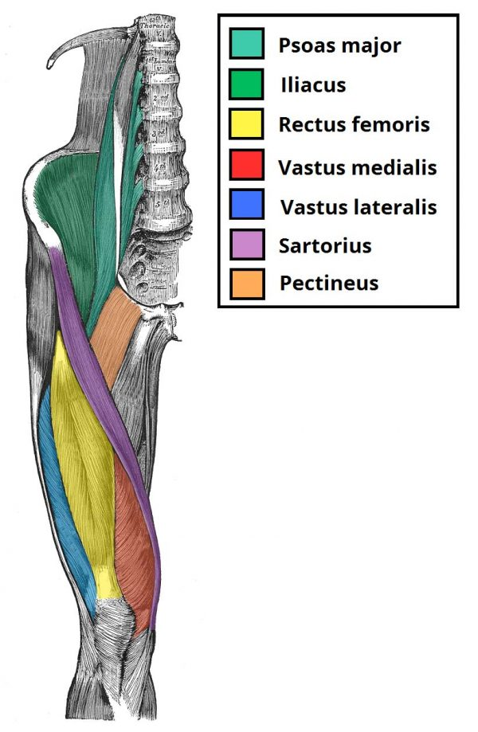
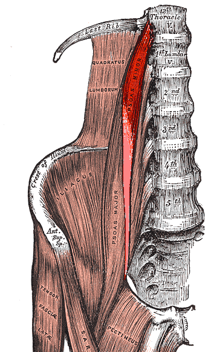
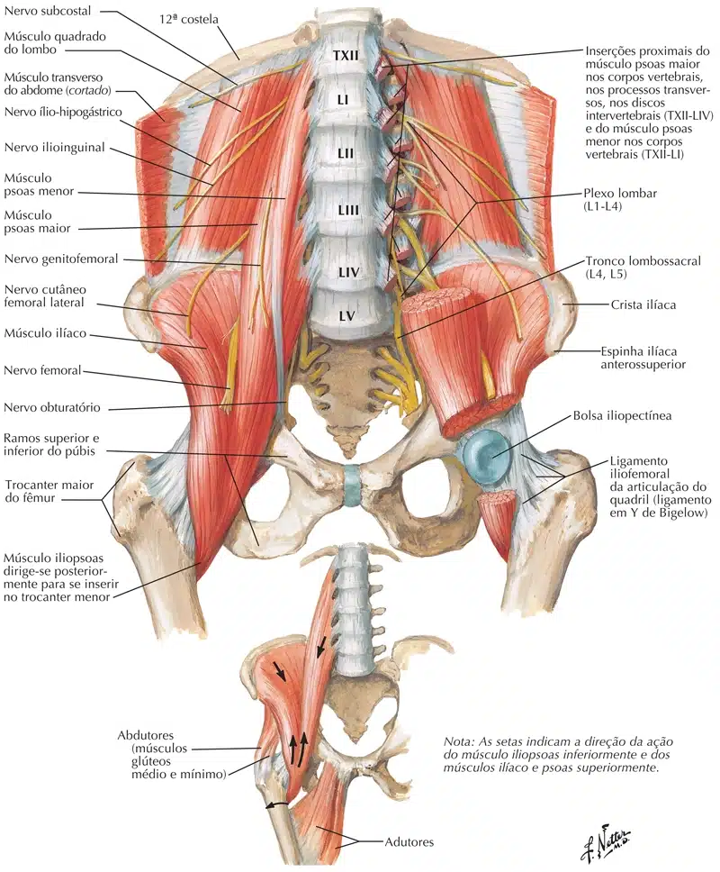
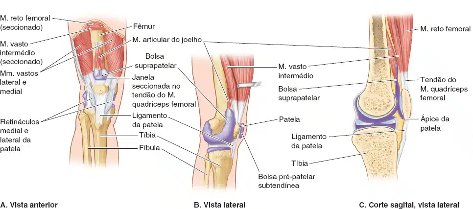
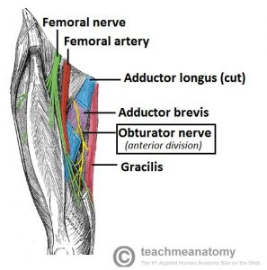
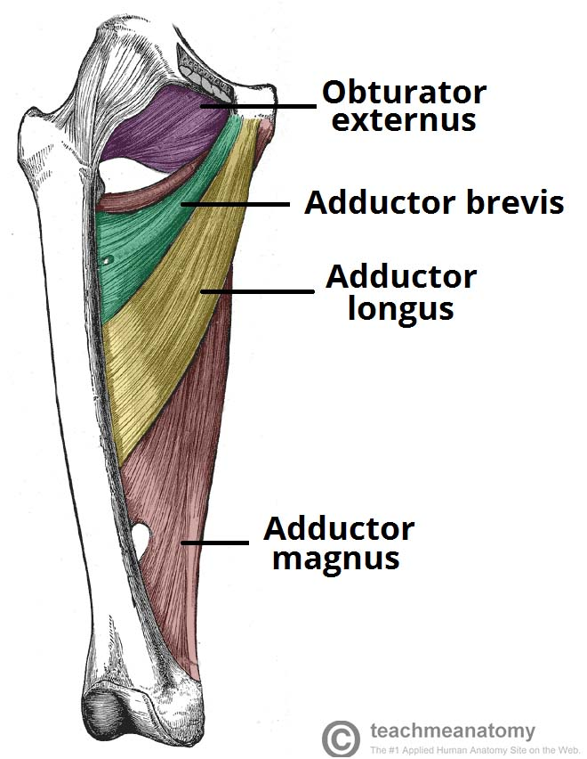
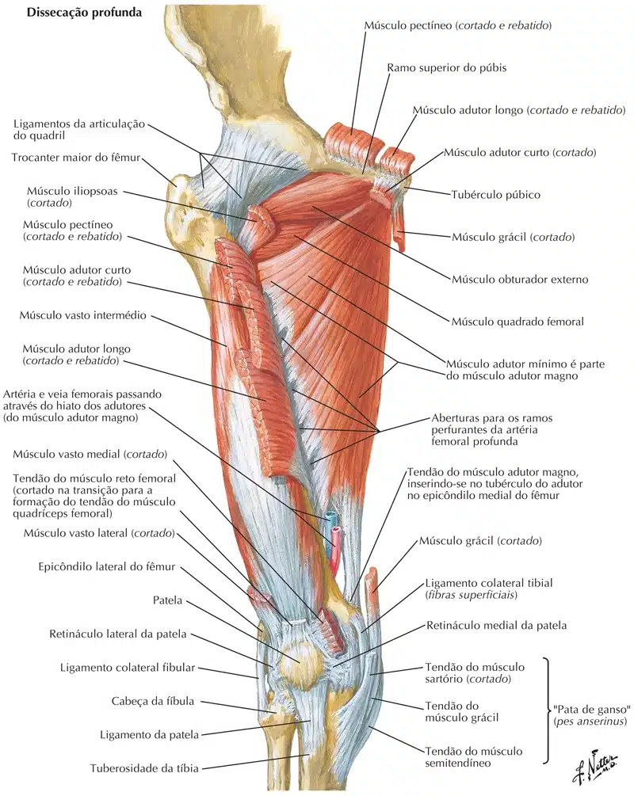
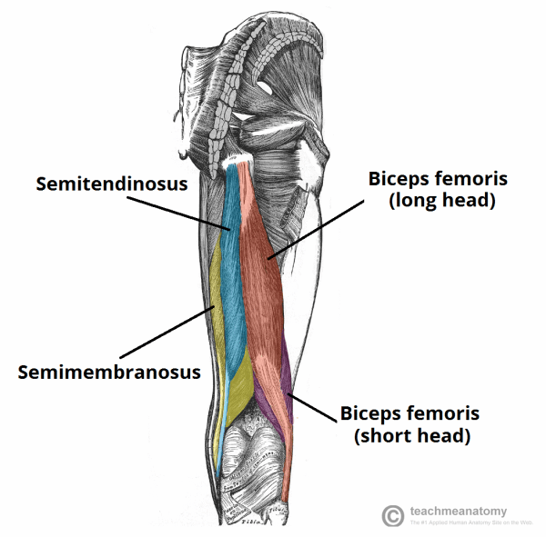
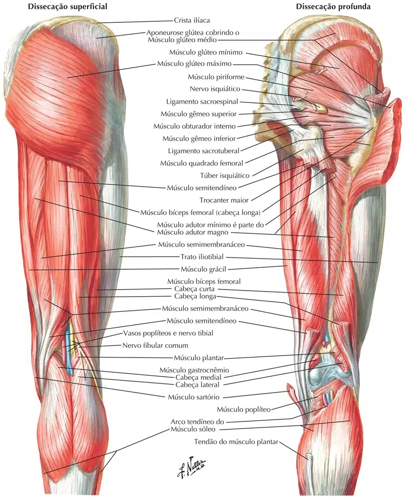

Os músculos da coxa são organizados em três compartimentos por septos intermusculares que seguem profundamente entre os grupos musculares, da face interna da fáscia lata até a linha áspera do fêmur.
São denominados de acordo com a localização ou ação na articulação do joelho.
Os compartimentos são:
Anterior ou extensor;
Medial ou adutor;
E posterior ou flexor.

https://teachmeanatomy.info/
Compartimento anterior ou extensor
Extensores da coxa
mas também flexores da articulação do quadril
Pectíneo
Inserção Proximal: Eminência ílo-pectínea, tubérculo púbico e ramo superior do púbis. Inserção Distal: Linha pectínea do fêmur. Inervação: Nervo Femoral (L2 – L4). Ação: Flexão do quadril e adução da coxa.

https://teachmeanatomy.info/
Iliopsoas
Ilíaco:
Inserção Superior: 2/3 superiores da fossa ilíaca, crista ilíaca e asa do sacro. Inserção Inferior: Trocânter menor. Inervação: Nervo Femural (L2 – L3). Ação: Flexão de quadril, anteroversão da pelve e flexão da coluna lombar (30° – 90°).
Psoas Maior:
Inserção Superior: Processo transverso das vértebras lombares, corpos e discos intervertebrais das últimas torácicas e todas lombares. Inserção Inferior: Trocânter menor. Inervação: Nervo superior e inferior do músculo psoas maior (L1 – L3). Ação: Flexão da coxa, flexão da coluna lombar (30° – 90°) e inclinação homolateral.
https://teachmeanatomy.info/
Psoas menor
Este músculo é geralmente ausente nas pessoas.
Inserção Superior: Corpo vertebral de T12 e L1. Inserção Inferior: Eminência iliopectínea. Inervação: L1. Ação: Flexão da pelve e coluna lombar.

Sartório
Inserção Proximal: Espinha ilíaca ântero-superior. Inserção Distal: Superfície medial da tuberosidade da tíbia (pata de ganso). Inervação: Nervo Femoral (L2 – L3). Ação: Flexão, abdução e rotação lateral da coxa e flexão e rotação medial do joelho.
https://teachmeanatomy.info/
Extensores do joelho
Quadríceps femoral
Inserção Proximal:
Reto Anterior: Espinha ilíaca ântero-inferior.
Vasto Lateral: Trocânter maior, linha áspera, linha intertrocantérica e tuberosidade glútea.
Vasto Medial: Linha áspera e linha intertrocantérica.
Vasto Intermédio: 2/3 proximais da face anterior e lateral do fêmur e ½ distal da linha áspera.
Inserção Distal: Patela e, através do ligamento patelar, na tuberosidade anterior da tíbia. Inervação: Nervo Femoral (L2 – L4). Ação: Extensão do joelho e o reto femural realiza flexão do quadril.
O vasto medial realiza rotação medial e o vasto lateral, rotação lateral.
https://teachmeanatomy.info/

NETTER: Frank H. Netter Atlas De Anatomia Humana. 7 ed. Rio de Janeiro, Elsevier, 2021.
NETTER: Frank H. Netter Atlas De Anatomia Humana. 7 ed. Rio de Janeiro, Elsevier, 2021.
Músculo articular do joelho
O pequeno e plano músculo articular do joelho, um derivado do M. vasto intermédio, geralmente tem número variável de alças musculares que se fixam superiormente à parte inferior da face anterior do fêmur e inferiormente à membrana sinovial da articulação do joelho e à parede da bolsa suprapatelar.
Este músculo traciona a membrana sinovial superiormente durante a extensão da perna, evitando, assim, que pregas da membrana sejam comprimidas entre o fêmur e a patela na articulação do joelho.

MOORE: Keith L. Anatomia orientada para a clínica. 8 ed. Rio de Janeiro: Guanabara Koogan, 2019.
Compartimento medial ou adutor
Adutor longo
Inserção Proximal: Superfície anterior do púbis e sínfise púbica. Inserção Distal: Linha áspera. Inervação: Nervo Obturatório (L2 – L4). Ação: Adução da coxa.

https://teachmeanatomy.info/
Adutor curto
Inserção Proximal: Ramo inferior do púbis. Inserção Distal: Linha áspera. Inervação: Nervo Obturatório (L2 – L4). Ação: Adução da coxa.
https://teachmeanatomy.info/
Adutor magno
Inserção Proximal: Tuberosidade isquiática, ramo do púbis e do ísquio. Inserção Distal: Linha áspera e tubérculo adutório. Inervação: Nervo Obturatório (L2 – L4) e Nervo Isquiático (L4 à S1). Ação: Adução da coxa.

https://teachmeanatomy.info/
Grácil
Inserção Proximal: Sínfise púbica e ramo inferior do púbis. Inserção Distal: Superfície medial da tuberosidade da tíbia (pata de ganso). Inervação: Nervo Obturatório (L2 – L3). Ação: Adução da coxa, flexão e rotação medial do joelho.
https://teachmeanatomy.info/
Obturador externo
Inserção Medial: Ramos do púbis e ísquio e face externa da membrana obturatória. Inserção Lateral: Fossa trocantérica do fêmur. Inervação: Nervo obturatório (L3 – L4). Ação: Rotação lateral da coxa
https://teachmeanatomy.info/
NETTER: Frank H. Netter Atlas De Anatomia Humana. 7 ed. Rio de Janeiro, Elsevier, 2021.

NETTER: Frank H. Netter Atlas De Anatomia Humana. 7 ed. Rio de Janeiro, Elsevier, 2021.
Compartimento posterior ou flexor
Extensores do quadril
mas também flexores do joelho
Bíceps femoral
Inserção Proximal:
Cabeça Longa: Tuberosidade isquiática e ligamento sacro-tuberoso
Cabeça Curta: Lábio lateral da linha áspera.
Inserção Distal: Cabeça da fíbula e côndilo lateral da tíbia. Inervação: Nervo Isquiático (L5 – S2), exceto L5 para a cabeça longa. Ação: Extensão do quadril, flexão do joelho e rotação lateral da coxa.

https://teachmeanatomy.info/
Semimembranáceo
Inserção Proximal: Tuberosidade isquiática. Inserção Distal: Côndilo medial da tíbia. Inervação: Nervo Isquiático (L5 – S2). Ação: Extensão do quadril, flexão e rotação medial do joelho.
https://teachmeanatomy.info/
Semitendíneo
Inserção Proximal: Tuberosidade isquiática. Inserção Distal: Superfície medial da tuberosidade da tíbia (pata de ganso). Inervação: Nervo Isquiático (L5 – S2). Ação: Extensão do quadril, flexão e rotação medial do joelho.
https://teachmeanatomy.info/

NETTER: Frank H. Netter Atlas De Anatomia Humana. 7 ed. Rio de Janeiro, Elsevier, 2021.